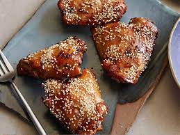

Healthy Recipes of the Week
This weeks top award winners to critically-acclaimed recipe gems, check out these original recipes from home cook and professional chefs around the country.

Fajita-Stuffed Peppers

Ree's Breakfast Muffins

Eggplant Parmesan

Teriyaki Chicken Thighs